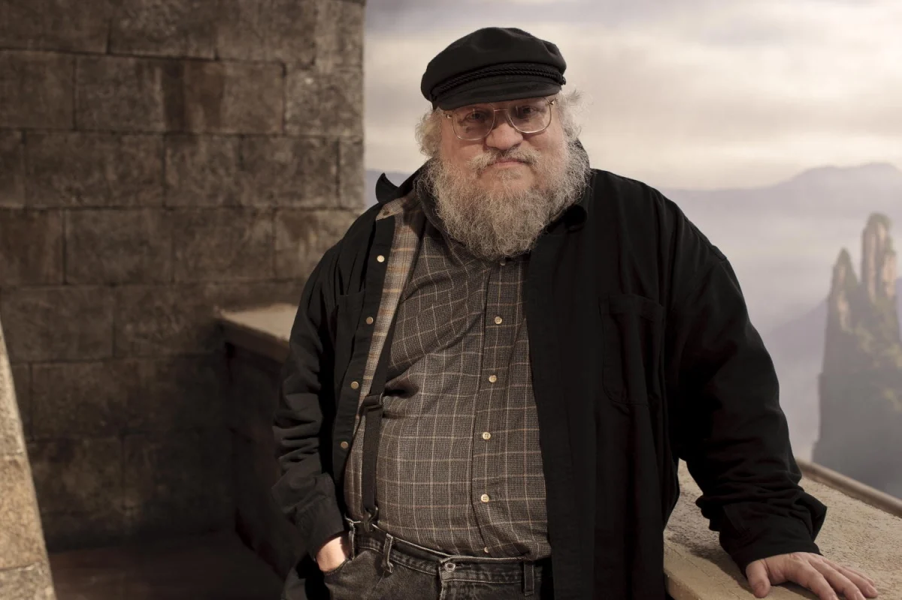

George Raymond Richard Martin[1] (born George Raymond Martin; September 20, 1948),[2] also known as GRRM,[3] is an American novelist, screenwriter, television producer and short story writer. He is the author of the series of epic fantasy novels A Song of Ice and Fire, which were adapted into the Emmy Award-winning HBO series Game of Thrones (2011–2019) and its prequel series House of the Dragon (2022–present). He also helped create the Wild Cards anthology series, and contributed worldbuilding for the 2022 video game Elden Ring.
In 2005, Lev Grossman of Time called Martin "the American Tolkien",[4] and in 2011, he was included on the annual Time 100 list of the most influential people in the world.

Biography
George R. R. Martin was born on September 20, 1948 in Bayonne, New Jersey the son of a longshoreman, whose working class family lived not far from the Bayonne docks. As a youth, Martin became an avid reader and collector of 1960s "silver age" superhero comic books. Fantastic Four #20 (Nov 1963) features a letter to the editor he wrote while still in high school. He credits the attention he received from this letter, as well as his following interest in comics fandom and its fanzines, with his interest in becoming a writer. Martin has spoken of Marvel Comics and especially Stan Lee as having influenced him.[2][3][4]
1970 Martin received a B.S. in Journalism from Northwestern University, Evanston, Illinois, graduating summa cum laude. He went on to complete a M.S. in Journalism in 1971, also from Northwestern. Martin was married to Gale Burnick from 1975 to 1979.
Martin began to write science fiction short stories in the early 1970s, and while his start into a career as a professional writer was not easy (one of his stories was rejected by different magazines forty-two times), he was never discouraged; several years later he went on to win the first of several Hugo Awards and Nebula Awards for his short fiction. His first story nominated for the Hugo and Nebula Award was With Morning Comes Mistfall, published in 1973 by Analog magazine. The story lost both awards, but Martin did not mind too much, noting that joining "Hugo-and-Nebula Losers" Club was a big enough accomplishment for him.
In 1976 for Kansas City's MidAmeriCon, the 34th World Science Fiction Convention (Worldcon), Martin, along with his friend and fellow writer Gardner Dozois, conceived of and organized the first Hugo Losers Party. It was a gathering spot, held the final evening of MidAmeriCon, for the losing writers (and their friends and family) to commiserate following the Hugo Awards ceremony the previous night. The large party had been planned well in advance, and perhaps fittingly, being the party's undisputed host, Martin had lost again in 1976; this time it was for two Hugo Awards: the novelette "...and Seven Times Never Kill Man" and the novella "The Storms of Windhaven," co-written with Lisa Tuttle. In the years and decades that have followed, the Hugo Losers Party become an annual event, evolving into one of the largest social gatherings held at the annual Worldcon, while adopting a more politically correct title of Post-Hugo Nominees Reception along the way.[5]
Although much of Martin's work is fantasy or horror, a number of his earlier works are science fiction occurring in a loosely-defined future history, known informally as 'The Thousand Worlds' or 'The manrealm'. He has also written at least one piece of political-military fiction, "Night of the Vampyres", collected in Harry Turtledove's anthology The Best Military Science Fiction of the 20th Century.[6]